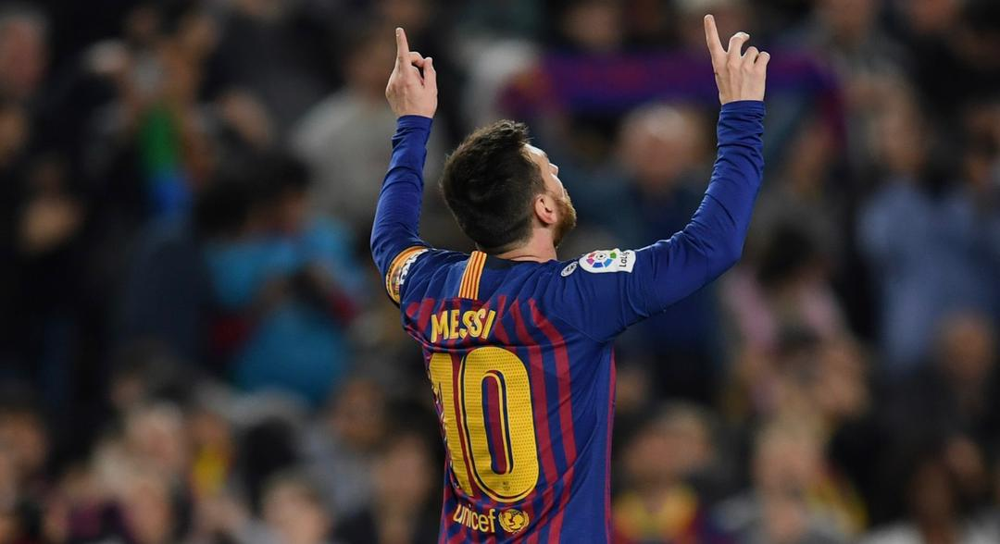

Lionel Messi
Lionel Messi is a famous football player.
He is one of the most influential entrepreneurs in the world and has made significant contributions to the fields of electric vehicles, space exploration, and renewable energy and has been recognized for his innovative ideas and ambitious vision for the future and has inspired millions of people around the world to pursue their own dreams and make a positive impact on society and has been recognized for his innovative ideas and ambitious vision for the future and has inspired millions of people around the world to pursue their own dreams and make a positive impact on society Lionel Messi is a famous football player. He was born on June 24, 1987, in Rosario, Argentina. Messi is known for his incredible dribbling skills, vision, and goal-scoring ability, and he has set numerous records in the sport. He has also been a key player for the Argentine national team, leading them to victory in the Copa America in 2021 and reaching the final of the FIFA World Cup in 2014. Messi’s impact on football is immense, and he is widely regarded as one of the greatest players of all time.

the legend football
mession to Mars and the development of sustainable energy solutions and transportation systems
and eventually help humans live on other planets and has been recognized for his innovative ideas and ambitious vision for the future and has inspired millions of people around the world to pursue their own dreams and make a positive impact on society Elon Musk is a famous entrepreneur, inventor, and businessman. He was born on June 28, 1971, in Pretoria, South Africa. Musk is the CEO of Tesla and SpaceX, two companies that have transformed the automotive and space industries. He is known for his innovative ideas and his vision of creating a better future through technology. Musk has also been involved in other ventures, such as Neuralink and The Boring Company, which aim to improve human life through technology. He has received numerous awards and recognition for his contributions to science and technology, and he continues to inspire people around the world with his work.
Lionel Messi
hspace="20">
Tesla produces electric vehicles and clean energy products.
The company has transformed the automobile industry and has been recognized for its innovative ideas and ambitious vision for the future and has inspired millions of people around the world to pursue their own dreams and make a positive impact on society Elon Musk is a famous entrepreneur, inventor, and businessman. He was born on June 28, 1971, in Pretoria, South Africa. Musk is the CEO of Tesla and SpaceX, two companies that have transformed the automotive and space industries. He is known for his innovative ideas and his vision of creating a better future through technology. Musk has also been involved in other ventures, such as Neuralink and The Boring Company, which aim to improve human life through technology. He has received numerous awards and recognition for his contributions to science and technology, and he continues to inspire people around the world with his work.